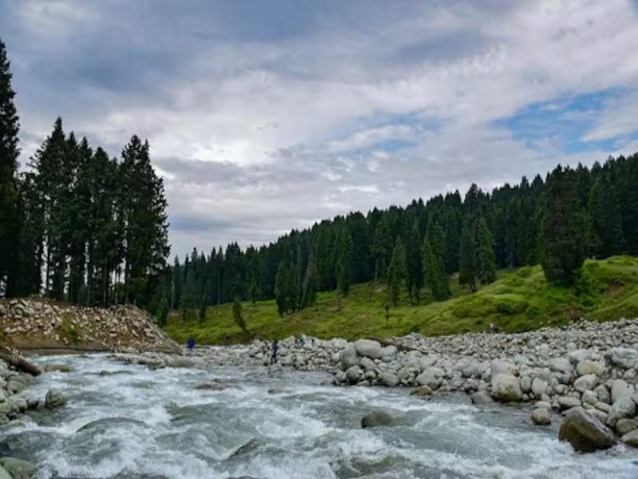
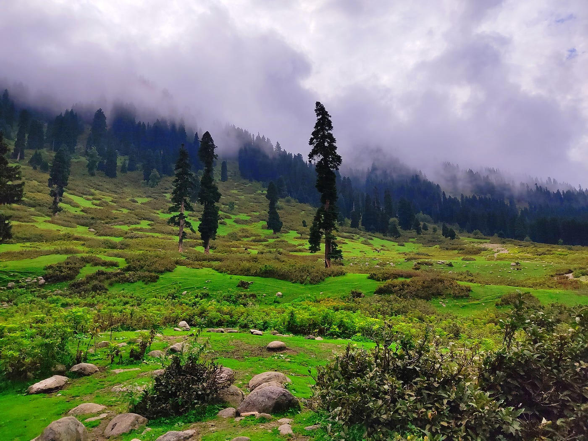
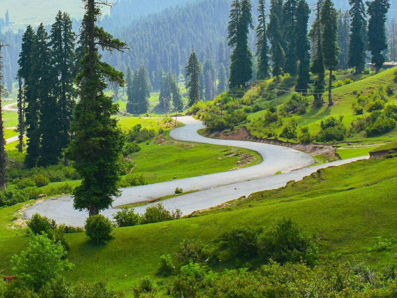
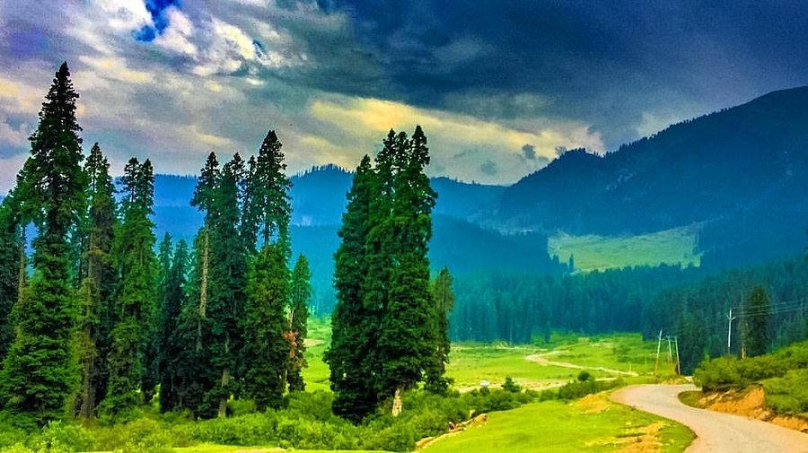

Valley of Milk — open pasture, pale streams and a quieter day in the Pir Panjal foothills
Doodhpathri — also spelled Doodhpatri — is a wide pasture in Budgam, roughly a two-hour drive southwest of Srinagar. Locals named it for the way the streams look after they leave the limestone: a faint milky cast in early light. The floor is almost flat, crossed by shallow channels, with fir and pine holding the slopes and shepherds still moving flocks across the grass in season.
There is little in the way of hotels on the meadow itself, which is part of the charm. We usually plan it as a full, unhurried day from Srinagar — picnic weather, short walks, photographs, and a return before dusk. It pairs especially well with a city stay when you want a mountain day without the gondola queues of Gulmarg.

Snow pulls back from the floor. The streams run loud and the first picnic days begin.
The classic meadow picture — wide green, grazing flocks and long, easy walking light.
Cooler air, amber slopes and photographs that feel less crowded than midsummer.
A snow field rather than a pasture. Beautiful when reachable; we confirm the road first.



Doodhpathri works beautifully as a Srinagar day outing. Tell us your dates and we will fold it into a custom valley itinerary.